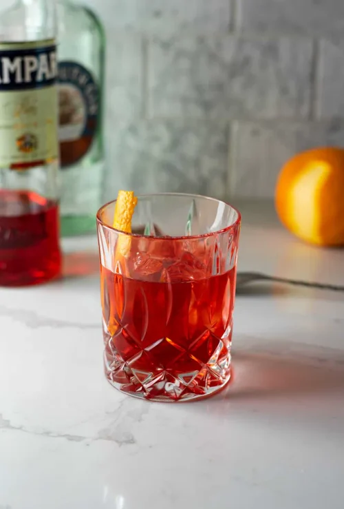
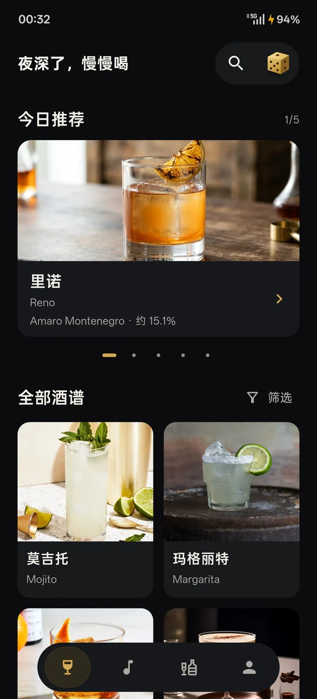
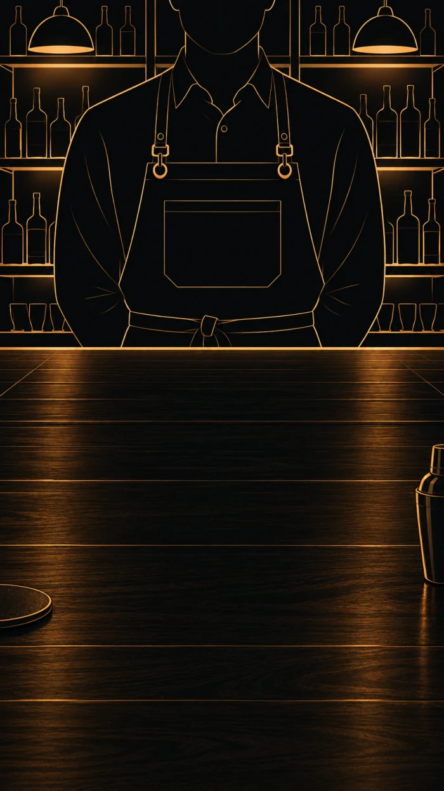
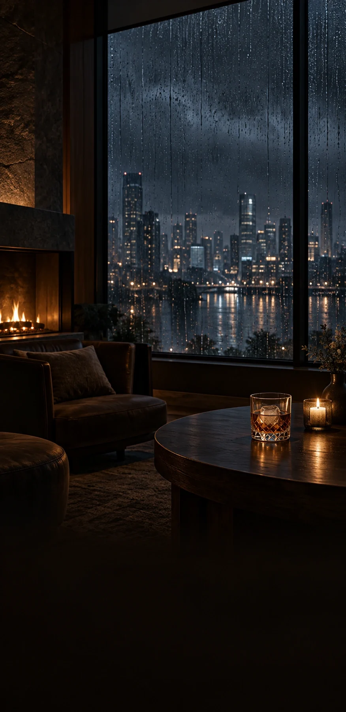

A LITTLE WILD. A LITTLE YOURS.
把时间，
留给这一杯。
从一杯鸡尾酒开始，
找到属于自己的节奏。

THE EVENING IS YOURS慢一点，也没关系。
向下探索 ↓COCKTAILS & SOUNDS
YOUR POCKET BAR
不必去远方。
此刻，就有好风景。
挑一款想喝的酒，跟着配方慢慢调好。
再放一点雨声、爵士或风铃。
把平常的一晚，过成喜欢的样子。
682款鸡尾酒
18种声音
离线随时打开
01 / EXPLORE
一杯的灵感，
随身带着。
Stirlore真实 App 界面

01 — 04
今晚，想喝哪一杯？
经典与小众，按心情挑选。搜索酒名、原料，发现下一杯灵感。
FIND YOUR NEXT FAVORITE
熟悉的经典，
也能有新的相遇。
左右滑动，遇见下一杯 ← →
A LITTLE SERENDIPITY
偶尔，
交给一点随机。
不必每次都想好答案。
让吧台，为你递来一杯。

这杯怎么样
酌野COCKTAIL MENU
尼克罗尼
Negroni
金酒 · 苦甜交织先看全景，再走近这一杯。3 款示例 · 完整酒库见 App

02 / SLOW DOWN
世界很吵。
这里，刚刚好。
环境声与音乐，自由组合。
为这一刻，留一个声音的位置。
雨夜酒馆窗边雨声 · 壁炉
播放试听18 秒18 种声音 · 自定义混音在 App 中聆听 ↗
03 / WHAT'S NEW
把喜欢的，
再打磨一点。
v1.0.1 当前版本 · 2028
新的名字，还是熟悉的陪伴。
- 酌野全新标志与页面体验
- 682 款酒谱，中文配方与制作步骤
- 18 种声音、自定义预设与沉浸场景
- 酒柜原料匹配、图鉴、笔记与成就
- 优化离线资源，缩小安装包体积
v1.0.0 最初的一杯
鸡尾酒与白噪音，在这里相遇。
Stirlore · MAKE TIME FOR YOURSELF
今晚，
留一点时间给自己。
下载 Android 版 ↓v1.0.1 · 215.52 MB
Android 7.0 及以上 · ARM64
A FEW THINGS TO KNOW
需要注册账户吗？+
无需注册。收藏、笔记与酒柜记录保存在设备本地，请定期在 App 内导出备份。
可以离线使用吗？+
酒谱、图片和音频随安装包提供，主要功能无需联网。
有 iOS 版本吗？+
目前提供 Android 安装包，尚未提供 iOS 版本。